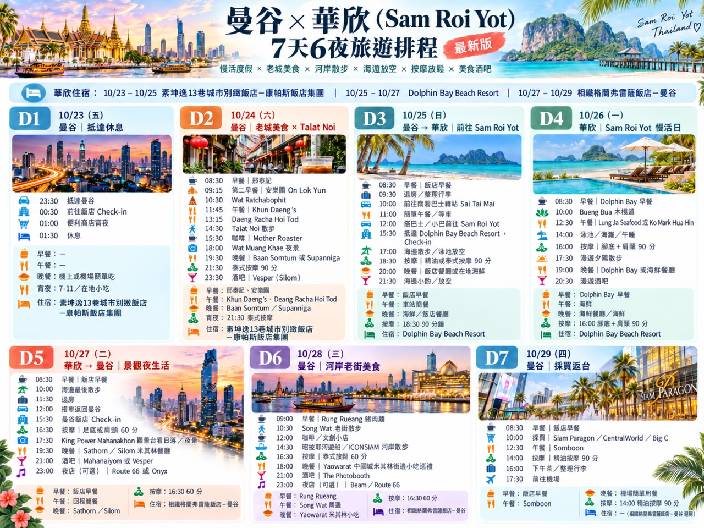

10/23 出發異動颱風影響・航班待確認查看詳情
資料整理：2026/10/23 13:50（台灣）／12:50（泰國）。以下為公告摘要，不會自動刷新。
本次航班狀態：待確認｜尚未提供航空公司、航班號碼及出發機場，不能據此判定你的班機已取消或照常飛行。
- 已知影響：中央社 10/22 21:56 報導，桃園機場截至 10/22 19:00 統計，10/23 已取消 414 架次（含客機與貨機）；這是當時統計，不是即時班表，也不代表全部曼谷航班取消。
- 氣象：10/23 有薔琵颱風影響台灣的風雨與航班異動風險。最新位置、強度、警戒範圍與解除時間，直接查看中央氣象署警報。
- 航空公司：台灣虎航已發布薔琵航班異動公告。無論搭哪家航空，請用實際航班號查詢官網／App，並再核對出發機場資訊。
這趟行程怎麼調整
- 出門前：先確認航班是否取消、延後或改時；未確認前，不以原本 23:30 抵達曼谷作為已確定安排。
- 若延誤／改期：聯絡航空公司確認改票方式，保存異動通知與收據；退費、改票及保險理賠須依各自規則，不預設免費或必定可賠。
- 先通知 CITICHIC：你訂的是 10/23–10/25。若抵達變動，請聯絡飯店／訂房平台註記延遲抵達並確認保留房間，避免未入住影響後續住宿；網站未代你聯絡。
- 抵達後再排：若至 10/24 才到曼谷，先入住休息；D2 早餐連吃、老城散步及夜生活改為彈性安排，不硬追原時刻。
- 若影響至 10/25：另確認往 Sam Roi Yot 的交通及 Dolphin Bay 10/25–10/27 住宿，確認後再調整；後續日期不自動順延。
原行程圖保留作參考；D1 下方已註明受颱風影響。台灣的颱風資訊不能用來判定泰國當地天氣或船班安全。
10/23–10/25 · 曼谷CITICHIC · Sukhumvit 13
10/25–10/27 · Sam Roi YotDolphin Bay Beach Resort
10/27–10/29 · 曼谷相鐵 · Sukhumvit 25／Asok
六晚住宿與 Google Maps
10/23–10/25｜素坤逸13巷城市別緻飯店－康帕斯飯店集團
CITICHIC Sukhumvit 13 Bangkok by Compass Hospitality
34 Sukhumvit Soi 13, Bangkok
📍 CITICHIC Google Maps
10/25–10/27｜Dolphin Bay Beach Resort
227 Moo 4, Samroiyod Beach, Sam Roi Yot
📍 Dolphin Bay Google Maps
10/27–10/29｜相鐵格蘭弗雷薩飯店－曼谷
SOTETSU GRAND FRESA BANGKOK
No. 7 Soi Sukhumvit 25, Bangkok
📍 相鐵飯店 Google Maps · 飯店官方交通資訊
10/23 訂房涵蓋 10/24 凌晨抵達；請通知 CITICHIC 深夜入住。10/29 請先退房、寄放行李，下午再取行李前往機場。各飯店早餐、入住及退房規定以訂房單為準。
更新版完整行程圖（點擊可收合）
